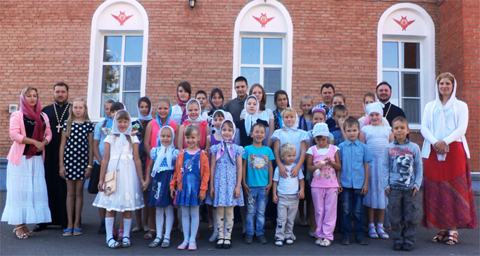

О Воскресной школе

Воскресная школа для детей при храме святителя Николая чудотворца "АЗБУКА ВЕРЫ"
Как добраться:мкр. Терновка, остановка: Дом культуры. Автобусы: 54, 66, маршрутки: 49, 10, 17.
Директор школыЛазарева Анна Петровна.
Дни занятий:суббота, воскресенье.
Воскресная школа при храме ведет активную работу. В ней обучается 80-85 детей, от 5 до 16 лет.Суббота - с 10-00 до 11-00 - группа раннего развития для дошкольников.Занятия ведет преподаватель начальных классов Карнушина Нина Петровна.Воскресенье - с 11-00 до 13-00.Занятия преподаются по обязательным дисциплинам: Закон Божий, Церковное хоровое пение, детское православное творчество.Занятия бесплатные. Преподаватели со специальным образованием и опытом работы.Школа участвует в городских православных фестивалях, епархиальных мероприятиях.Для определения ребенка в воскресную школу необходимо подать заявление, которое можно заполнить у директора воскресной школы Лазаревой Анны Петровны в храме и в воскресной школе.
По всем вопросам можно обращаться по телефону +7-905-015-98-10